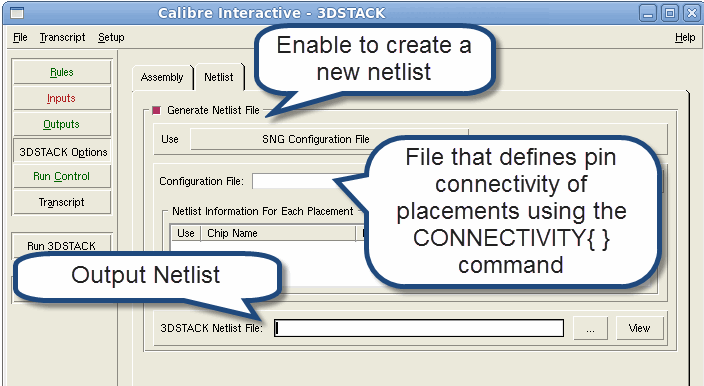

Use Calibre Interactive
to generate a netlist based on specified options if you do not have
a complete source netlist for your 3D assembly.
Procedure
- Select the Rules button
in the left panel of the CI window, define the path to your rule file,
and click Load.
- Click Setup and
enable the “3DSTACK options” checkbox.
- Click 3DSTACK
Options and click the Netlist tab.
Figure 1. Create Source Netlist
With Calibre Interactive
- Enable the “Generate Netlist
File” checkbox.
- Specify
the path to an existing configuration file that defines the pin
connectivity between placements.
The configuration
file uses the syntax of a System Netlist Generator configuration
file except that it only contains the CONNECTIVITY statement’s placement and pin mapping
lists. See “System Netlist Generator Configuration File Format” for more details.
The following example connects two pins
on two placements together:
CONNECTIVITY {
place_1 {pin_a clk} place2 {connect_to_a connect_to_clk}
}
All pins for each placed chip
must be connected. Any unconnected pins are reported as errors.
- Click Run 3DSTACK.
The configuration file and
your defined placements are passed to the System Netlist Generator
tool. The System Netlist Generator uses the given information to
generate a source netlist for your assembly.
Results
You have created a source netlist
for your 3D assembly by defining connectivity in a configuration
file. Calibre 3DSTACK passes this information to the System Netlist
Generator and generates a source netlist for your design. The netlist
is used in the verification run to perform LVS.